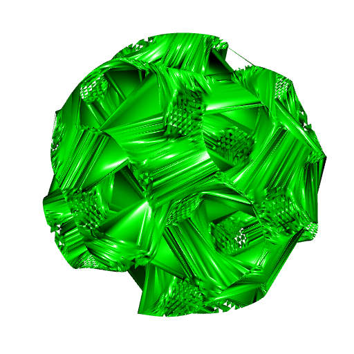

3D alpha wrapping with R
The RcppCGAL package now contains version 5.5.2 of the CGAL library. There is something new in this version: the 3D alpha wrapping. This is a bit similar to the 3D alpha hull but this can work better.
So I implemented the alpha wrapping in my package cgalMeshes (currently it is only in the github branch of the repository).
To illustrate the alpha wrapping, I will take a pseudo-gyroid. It is an isosurface, and it is qualified as “pseudo” because the true gyroid has a more complicated isosurface equation. The pseudo-gyroid is an approximation of the gyroid.
# the pseudo-gyroid is the isosurface f(x,y,z)=0
f <- function(x, y, z) {
cos(x) * sin(y) + cos(y) * sin(z) + cos(z) * sin(x)
}
# construct the isosurface f=0
ngrid <- 70L
x <- y <- z <- seq(-5, 5, length.out = ngrid)
Grid <- expand.grid(X = x, Y = y, Z = z)
voxel <- array(
with(Grid, f(X, Y, Z)), dim = c(ngrid, ngrid, ngrid)
)
library(rmarchingcubes)
contour_shape <- contour3d(
griddata = voxel, level = 0, x = x, y = y, z = z
)
# make mesh
library(rgl)
rglMesh <- tmesh3d(
vertices = t(contour_shape[["vertices"]]),
indices = t(contour_shape[["triangles"]]),
normals = contour_shape[["normals"]]
)open3d(windowRect = 50 + c(0, 0, 512, 512))
view3d(-40, 35)
shade3d(rglMesh, color = "orange")
bdry <- getBoundary3d(rglMesh, color = "black", lwd = 3)
open3d(windowRect = 50 + c(0, 0, 512, 512))
view3d(-40, 35)
shade3d(rglMesh, color = "orange")
shade3d(bdry)Maybe adding the boundary to the plot is helpful for visualization:
bdry <- getBoundary3d(rglMesh, color = "black", lwd = 3)
open3d(windowRect = 50 + c(0, 0, 512, 512))
view3d(-40, 35)
shade3d(rglMesh, color = "orange")
shade3d(bdry)This pseudo-gyroid is inscribed in the cube \((-5,5)\times(-5,5)\times(-5,5)\). I prefer the spherical pseudo-gyroid, obtained by clipping the cubical pseudo-gyroid to a sphere:
# returns the squared norms of the vertices
sqnorm <- function(vertices) {
apply(vertices, 1L, function(row) crossprod(row))
}
# clipping
rglMesh2 <- clipMesh3d(rglMesh, sqnorm, bound = 25, greater = FALSE)
# extract boundary
bdry <- getBoundary3d(rglMesh2, color = "black", lwd = 3)open3d(windowRect = 50 + c(0, 0, 512, 512), zoom = 0.7)
shade3d(rglMesh2, color = "orangered")
shade3d(bdry)This mesh has \(21371\) vertices and \(40919\) triangles:
rglMesh2
## mesh3d object with 21731 vertices, 40919 triangles.Let’s extract its vertices:
vertices <- t(rglMesh2$vb[-4L, ])And now we will try to reconstruct the surface from its vertices only.
The advanced front surface reconstruction fails:
library(cgalMeshes)
AFSmesh <- AFSreconstruction(vertices)
AFSmesh$computeNormals()open3d(windowRect = 50 + c(0, 0, 512, 512), zoom = 0.7)
shade3d(AFSmesh$getMesh(), color = "red")The pseudo-gyroid does not bound a volume (it has no width), so the Poisson reconstruction cannot be applied.
Let’s try the alpha hull.
library(AlphaHull3D)
ahull <- fullAhull3d(vertices)
amesh <- setAlpha(ahull, alpha = 1.8)This value of \(\alpha\) is both too big (we get some faces that shouldn’t be there) and too small (we get some holes):
open3d(windowRect = 50 + c(0, 0, 512, 512), zoom = 0.7)
shade3d(amesh, color = "green")
So there’s no way.
Finally, the alpha wrapping comes to our rescue. The alpha wrapping depends on two parameters:
\(\alpha\): the smallest \(\alpha\), the smallest triangles in the output mesh;
offset: the distance between the input and the output.
In the alphaWrap function, we give the relative \(\alpha\) and the relative offset. Then \(\alpha\) and the offset are both obtained by dividing the length of the diagonal of the bounding box of the vertices by their relative version. You have to play with these parameters to get a nice mesh. A too small \(\alpha\) yields some holes in the mesh, and the mesh has less details when \(\alpha\) increases.
wrapMesh <- alphaWrap(vertices, ralpha = 100, roffset = 1000)
wrapMesh$computeNormals()wrapRglMesh <- wrapMesh$getMesh()
open3d(windowRect = 50 + c(0, 0, 512, 512), zoom = 0.7)
shade3d(wrapRglMesh, color = "orangered")Note that we cannot add the boundary to this mesh: it has no boundary. It has a width, controlled by the offset parameter.